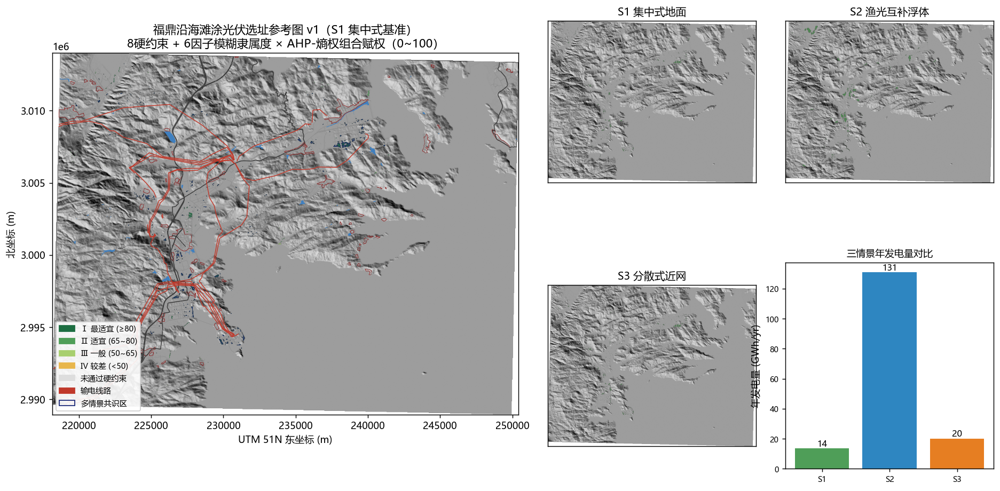

研究区福鼎东南沿海（120.16–120.48°E，27.00–27.22°N，约 32×25 km）： 沙埕湾南岸滩涂与店下—龙安沿海平原。与《白茶新茶园选址》同一方法内核、不同要素语境—— 茶园看坡向与海拔，光伏看并网距离、地类准入（滩涂 vs 耕地）与太阳辐射收益。

| 情景 | 调整 | 候选地块 | 装机潜力 | 年发电量 |
|---|---|---|---|---|
| S1 集中式地面（基准） | — | 1 片 / 17 ha（龙安裸地，S=93.6） | 0.014 GW | 14 GWh |
| S2 渔光互补浮体 | 地类放宽至水面/滩涂，坡度因子取 1，地类权重 0.30 | 9 片 / 161 ha（沿海养殖水面） | 0.135 GW | 131 GWh |
| S3 分散式近网 | 并网收紧至 1500m，门槛 5ha | 2 片 / 25 ha | 0.021 GW | 20 GWh |
| 多情景共识区（≥2 情景入选，稳健推荐） | 68 ha | |||
| 因子 | AHP | 熵权 | 组合 |
|---|---|---|---|
| 地类现状 | .16 | .302 | .242 |
| 并网距离 | .28 | .142 | .219 |
| 坡度 | .18 | .178 | .197 |
| 居民点退距 | .10 | .316 | .196 |
| 道路可达 | .16 | .031 | .078 |
| 生态缓冲 | .12 | .031 | .068 |
熵权与 AHP 的显著分歧（居民点退距 0.316 对 0.10、道路 0.031 对 0.16） 反映小可行域内隶属度方差的再分配；全因子 ±50% 扰动时候选面积波动仅 −4.6%~+2.0%（小可行域阈值饱和效应），组合结果稳定。
送出线路投资是陆上光伏最大的弹性成本：距输电线路 ≤3000m 设为硬约束（经济性经验上限），
并网距离再做 ≤500m→1 / 3000m→0 的线性隶属度因子。输电线来自 Overpass
way["power"~"^(line|minor_line)$"]（含电压属性）——大 bbox 全要素查询会 502，
拆成"轻核心查询保成功 + 建筑重查询单独重试"，3 镜像轮换。
12 个月代表日 × 逐 0.2° 时角采样太阳矢量（赤纬 Cooper 公式），投影到地块平均坡度/坡向面， 按各向同性天空模型（直散分离 df=0.45、反照率 ρ=0.2）积分年 POA，除以年 GHI 得倾斜面转换系数 f。 自检：f(0°)=1.000 / 南坡 5°=1.009 / 北坡 5°=0.986——南向微坡增益、北向损耗，符号与量级正确。 年发电量 E = f × GHI_ref × η × PR × 面积（GHI_ref=1210 kWh/m²·yr、η=0.21、PR=0.80）。 GCR=0.40 阵列覆盖系数必须计入——漏了会虚高 2.5 倍。
GeoScene Pro 区域太阳辐射工具（含坡度坡向遮挡校正）与 Python 数值积分同参数互校， 结果允许 ±10% 浮动；权重表、情景对比、候选地块清单均由脚本落盘 CSV，数字可复核。